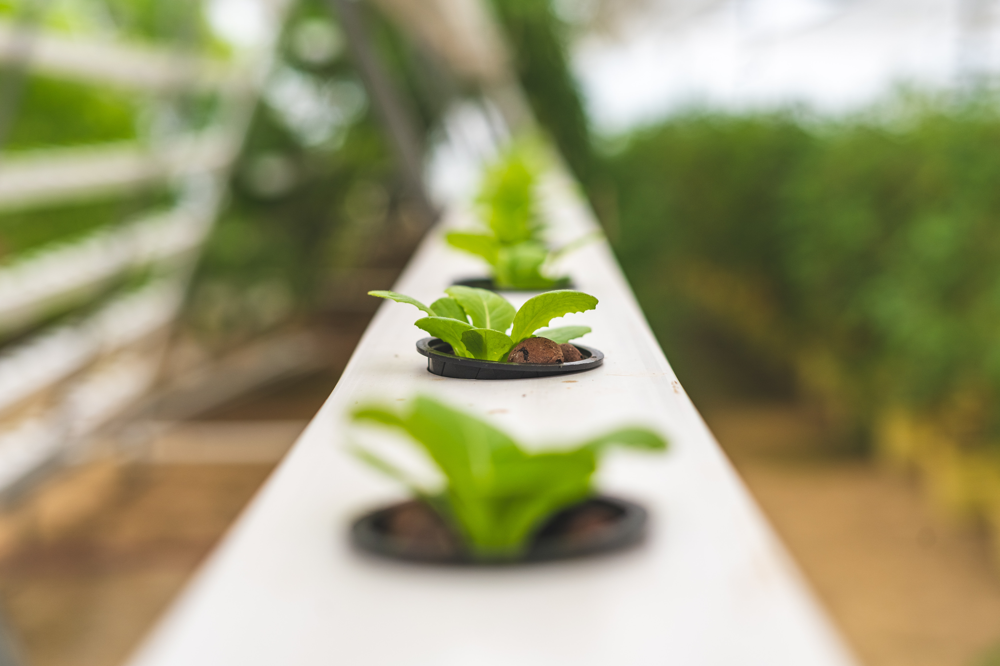

0
PPM
Jumlah konta minan atau padatan pada air nutrisi
0
pH
Tingkat asam-basa pada air nutrisi
0
Liter per Second
Kecepatan aliran air pada sistem
0
°Celcius
Suhu real time pada air nutrisi

Apa Itu Sistem NFT?
Sistem hidroponik NFT merupakan salah satu teknik hidroponik dimana akar tanaman tumbuh pada lapisan nutrisi dangkal dan tersirkulasi sehingga tanaman dapat memperoleh cukup air, nutrisi dan oksigen.

Kelebihan Sistem NFT
Beberapa kelebihan hidroponik NFT adalah Pertumbuhan lebih cepat dari sistem lain, pengendapan kotoran sangat sedikit, dan Pertumbuhan bisa seragam.

Yang Perlu Di Perhatikan
Beberapa hal yang perlu diperhatikan dalam NFT adalah : kemiringan talang (1-5%) untuk pengaliran larutan nutrisi, kecepatan aliran masuk tidak boleh terlalu cepat (dapat diatur oleh pembukaan kran berkisar 0.3-0.75 L/menit) dan lebar talang yang memadai untuk menghindari terbendungnya larutan nutrisi